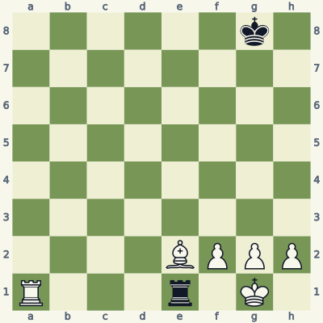
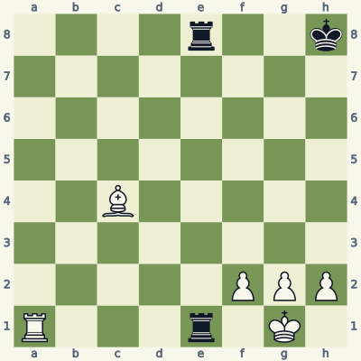
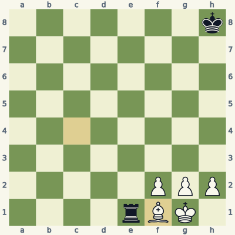
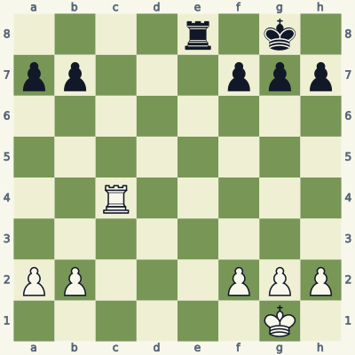
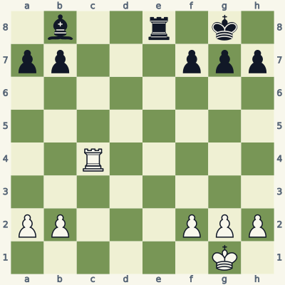
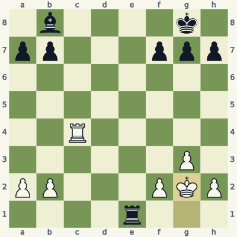
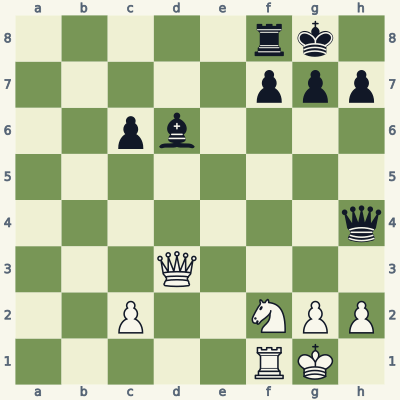
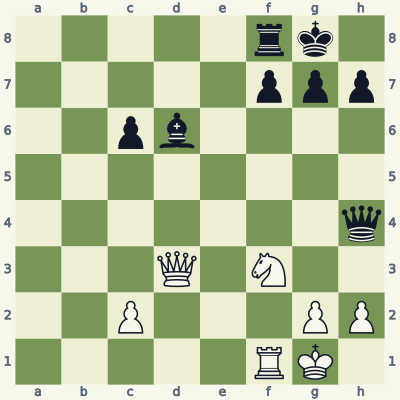
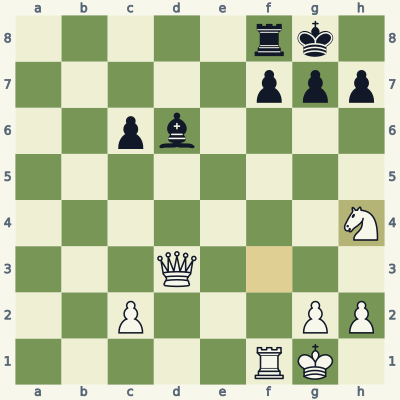

For players who know how the pieces move. Read the model, try the exercise without the answer, then explain the result aloud. Use a board and make the moves one at a time. Spend about 20 minutes per lesson; repeat it tomorrow and a week later.
Check the immediate threat, choose candidates, test the opponent's checks and captures, then inspect the final position. Some questions ask for a safe move or correct diagnosis rather than a unique best move. Sample replies illustrate ideas unless the explanation says they are forced.
Notation and replay help
K king · Q queen · R rook · B bishop · N knight. A pawn move has no piece letter. Nf3 means knight to f3; Rxc6 means rook captures on c6; + means check; # means mate; O-O means kingside castling; e8=Q means promotion. A line beginning 1... starts with Black. Diagrams face the player to move.
The PGN download loads starting positions and sample lines into a chess program. Position codes (FEN) let you recreate individual boards. The PDF and website work without an account.
Lesson 07.1
Capture, block, or move the king
When in check, organize the search. Try captures of the checker, blocks of a line check, and safe king moves. A legal defense must also survive the next reply.

Model A · White to movePosition code6k1/8/8/8/8/8/4BPPP/R3r1K1 w - - 0 1
Read the position
Black's rook on e1 checks the white king along e1-f1-g1.
White's rook on a1 can capture the checker along the clear first rank.
White's bishop could block on f1, but that is not the only defense.
1. Rxe1
Rxe1 removes the attacking rook completely. After the capture, Black has no rook left to continue checking. White has solved the immediate problem while gaining a rook.
Bf1 would also block the line, but it leaves Black's rook on the board. Prefer a defense that both answers the threat and improves the resulting position when the calculation supports it. Do not stop searching just because the first legal move avoids mate.
Exercise B · White to move
Take five minutes. Write your reason and the opponent's reply before opening the answer.

Inspect what changed from the model.Position code4r2k/8/8/8/2B5/8/5PPP/R3r1K1 w - - 0 1
What extra black piece stands behind the checking rook?
Calculate Rxe1 through Black's recapture.
How can White answer the second check, and why is the blocking piece safe from immediate capture?
Read the full explanation
Black has another rook on e8. The e-file between the two black rooks is clear, so it can replace the rook that White captures.
Rxe1 Rxe1+ leaves White facing a second rook check. Ending the calculation after White's first capture would miss this reply.
Bf1 blocks the line using the diagonal c4-d3-e2-f1. The white king on g1 protects f1; if Black plays ...Rxf1+, Kxf1 takes that last rook. White has found a continuing defense, not merely one legal move. The sample does not attempt to solve the entire resulting endgame.
1. Rxe1 Rxe1+ 2. Bf1

Position after the sample line; the last move is highlighted.
Score your explanation: 1 point for the fact and 1 for its consequence in each answer, out of 6. At 4 or below, replay the model and revisit tomorrow.
Where the idea can fail
An undefended checking piece is often capturable, but verify what stands behind it. A second attacker can replace the first on the same checking square.
Use it in your own games
For one check in each practice game, list the three response categories before moving. Follow your chosen response until all immediate checking captures are answered.
Making an escape square can prevent back-rank mate. The square must be empty, reachable by the king, and free of enemy attacks after the check arrives.

Model A · White to movePosition code4r1k1/pp3ppp/8/8/2R5/8/PP3PPP/6K1 w - - 0 1
Read the position
White's king has three pawns directly in front of its possible escape squares.
Black's rook can enter on e1 with a back-rank check.
Moving the h-pawn to h3 leaves h2 available to the king.
1. h3 Re1+ 2. Kh2
h3 creates an escape square. If Black plays ...Re1+, Kh2 steps off the first rank. The rook on e1 attacks f1 and h1, but it does not attack h2.
This is one preventive choice, not the only move. White could also investigate a king move or other pawn moves. The point is to test the intended escape after the opponent's check, when the board has actually changed.
Exercise B · White to move
Take five minutes. Write your reason and the opponent's reply before opening the answer.

Inspect what changed from the model.Position code1b2r1k1/pp3ppp/8/8/2R5/8/PP3PPP/6K1 w - - 0 1
Which square does the bishop on b8 attack through c7-d6-e5-f4-g3?
Why does h3 fail against ...Re1 in this position?
Show an alternative pawn move and a safe king response to the check.
Read the full explanation
The bishop attacks h2. All intervening squares on that diagonal are empty in the starting position.
After h3 Re1#, h2 is empty but attacked by the bishop. The king cannot use it, while the rook controls the first rank and the other pawn squares remain occupied. This is checkmate.
g3 Re1+ Kg2 avoids the immediate mate: g2 is vacated and not attacked by either black piece. The g3-pawn also blocks the bishop's diagonal. Black still has an extra bishop, so avoiding this mate does not make the whole position equal.
1. g3 Re1+ 2. Kg2

Position after the sample line; the last move is highlighted.
Score your explanation: 1 point for the fact and 1 for its consequence in each answer, out of 6. At 4 or below, replay the model and revisit tomorrow.
Where the idea can fail
A pawn move does not automatically create useful breathing room. A bishop on a long diagonal may already control the square you intend to use.
Use it in your own games
Before creating an escape square, point to every enemy bishop and rook and trace their lines to that square. Recheck after any intervening pawn move.
A threat often depends on cooperation between two attacking pieces. Removing the support may defeat the threat while gaining material, even if the attacking queen stays active.

Model A · White to movePosition code5rk1/5ppp/2pb4/8/7q/3Q4/2P2NPP/5RK1 w - - 0 1
Read the position
Black threatens ...Qxh2#: the queen would be protected on h2 by the bishop on d6.
White's queen on d3 can capture that bishop along the clear d-file.
The knight on f2 does not attack the black queen on h4.
1. Qxd6 Qxh2+ 2. Kxh2
Qxd6 removes the bishop that makes the h2 attack dangerous. If Black blindly continues ...Qxh2+, White can now play Kxh2 because the queen has lost its defender. The line is a test of the old threat, not a recommendation that Black sacrifice its queen.
After Qxd6, Black should choose a better reply, but White has already won the bishop and stopped the immediate mating idea. A defensive move can look active because it attacks the foundation of the threat.
Exercise B · White to move
Take five minutes. Write your reason and the opponent's reply before opening the answer.

Inspect what changed from the model.Position code5rk1/5ppp/2pb4/8/7q/3Q1N2/2P3PP/5RK1 w - - 0 1
Where is the white knight now, and what does it attack?
What is the simplest way to remove Black's queen?
Why should you inspect captures before choosing a defensive queen move?
Read the full explanation
The knight has moved from f2 to f3. From f3 it attacks h4, the square occupied by Black's queen. This one-square change creates a much stronger resource.
Nxh4 captures the queen. No black piece can recapture the knight on h4 immediately. White should notice this before considering a queen exchange or a pawn move.
A forcing capture can eliminate the threat and gain decisive material. Qxd6 remains a way to remove the bishop, but taking the queen is the larger opportunity. Defensive thinking should begin with the actual legal captures, not with an assumption that only passive moves are available.
1. Nxh4

Position after the sample line; the last move is highlighted.
Score your explanation: 1 point for the fact and 1 for its consequence in each answer, out of 6. At 4 or below, replay the model and revisit tomorrow.
Where the idea can fail
Qh3 also offers a queen exchange: ...Qxh3 Nxh3. It addresses the immediate attack but misses the direct gain of the bishop. Compare defenses by the position they leave, not only by whether they stop mate.
Use it in your own games
When you see a mating threat, identify the attacking piece and its defender separately. Test capturing either one, then verify whether the original mating move still works.
All six starts and listed moves in this book were checked for legality. Stockfish 19 reviewed candidates at depth 18. Available endings with seven or fewer pieces were checked against the Lichess tablebase, including every move of the demonstrated endgame lines. A strategic sample is not a claim of unique best play.
These original, AI-assisted explanations were written around the positions and revised after checking. The lesson data and validation notes make the examples inspectable. Further reading and practice: